| < | > |
| Last day | [2004-10-30 11:59] |
| Very close to the core of my being is a sweet breakfast. I find it hard to imagine myself eating anything other than honey or jam with a little toast under it. João on the other hand has always enjoyed savory adventures in the morning. It was he that introduced me to the wild idea of cheese for breakfast, all those years ago when we first started to wake up together. I quickly modified it to cheese and honey. But we haven't had that for a while, not since the days when we both drank tea. Before I fell head over heels in a wee cup of coffee. Ah... the history of our breakfasts – what a subject, but not one for here. Suffice to say that we sat down with our chairs pushed behind us in the fine posh morning room of the Nara Hotel to eat "one Western, one Asian". 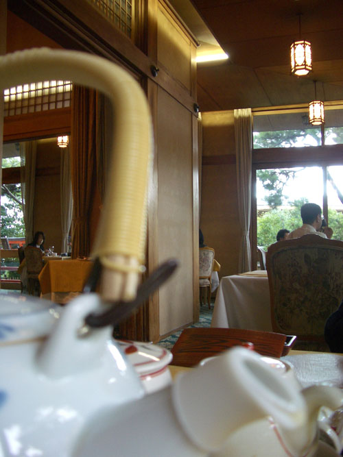 After breakfast we prowled about a bit. Past frozen-in-time lobbies. 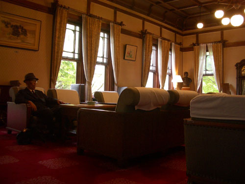 Past the Emperor's plate. 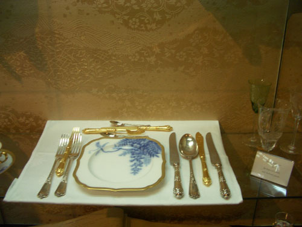 Until we'd had enough and headed for the station. The plan was to go to Kyoto and check that we could make it from there to the airport the next morning. If so, we would stay in Kyoto. If not, then we would head for Osaka. On the train back to Kyoto I failed miserably to capture that wonderful golden yellow-green of the rice field. 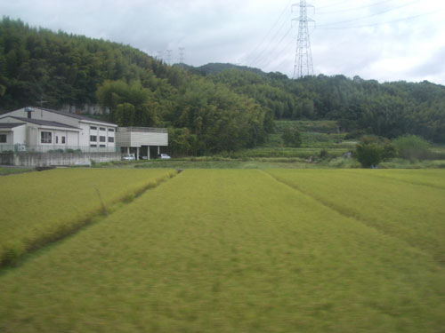 And this is a plastic head rest cover that I'm ashamed to say I was too blind to recognize as lace. It was only after I got back to London and looked at it on the screen that I realized what it was. At the time, even with my glasses on it looked like a print out of stock prices – which seemed like a strange idea for a head rest. 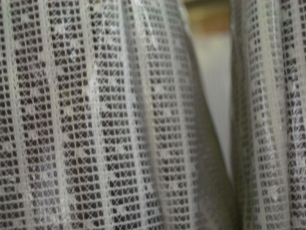 * The Nara Hotel had predisposed us to luxury. Once we'd organized the train reservations for the next morning, we just headed for the Hotel Granvia Kyoto, which is in the station building itself. A world of sealed windows and endless corridors. 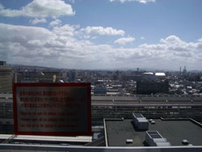 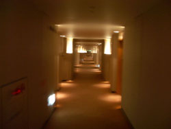 We would have to look slippy if we were going to see anything in an afternoon that was fast speeding past. A quick look at the map and I decided on the Gingaku-ji, the Silver Pavilion, built by the grandson of the builder of the Golden Pavilion. The bus seemed to take forever. Kyoto was beginning to seem familiar. Eventually we piled out with a gaggle of Germans. In order to avoid their jolly voices, we paused at a wooden plate and bowl shop. Poor João, he binge bought and then felt guilty. "I bought too much. What do we need all those bowls for?" Well, to tell you the truth, I love to see them in the cupboard. Maybe he will read this and be happy. * There is something special about the Ginkaku-ji. It has a fantastic entrance. You go through the gate and turn right and walk down a long straight corridor of tall clipped wall like hedges. At the end you turn left and enter the garden. This beautiful old building is immediately to your right. 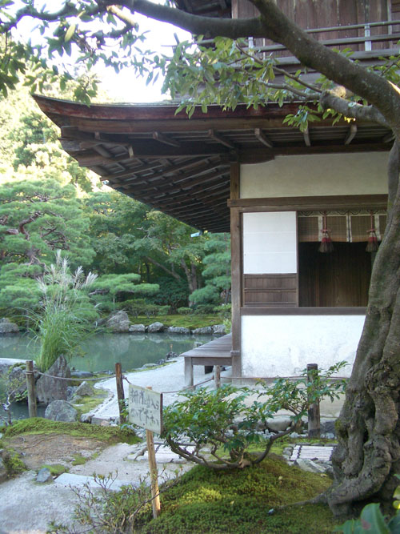 To your left is a strange arrangement of sand. A truncated cone like a mini Mt. Fuji in cement. Beyond this they were manicuring the pine trees. 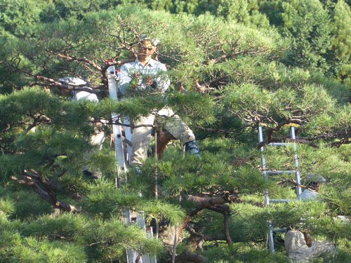 It's hard in this kind of place to take photographs without feeling you are just repeating a pattern set by millions before you. Those of us with a little artistic vanity try instead to capture something more individual. I liked this because I felt it was an analogy for culture – the living aided by the dead. 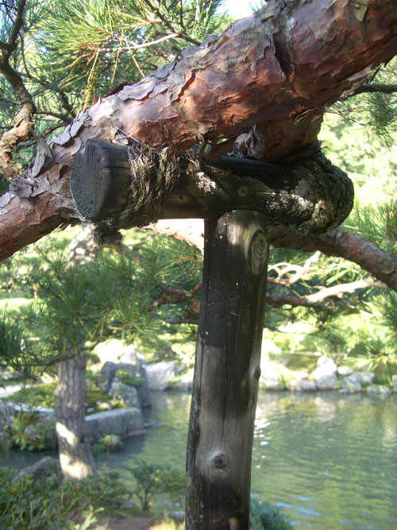 Sometimes one just couldn't resist a cliche. The beautiful softness of moss. 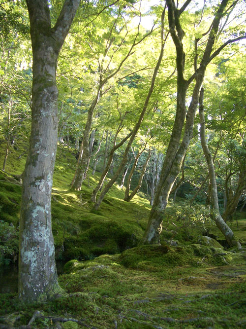 Winding stone paths led us up and then down the steep little hillside. The day was ending. 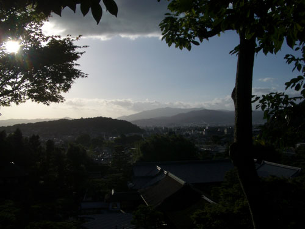 We knew soon we would be back in London, back at work, back in grimy reality. The perfect care which had made these steps would vanish from our lives once again. 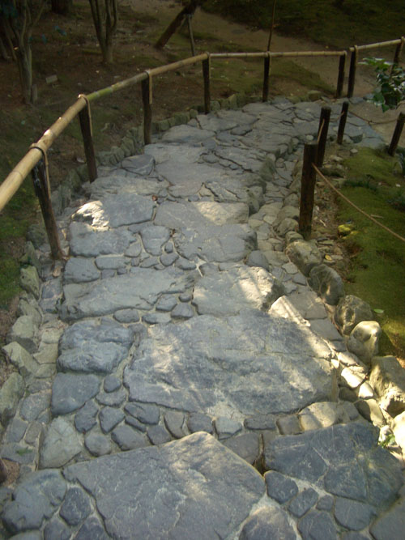 When we got to the exit we turned back. It was too magical to leave until the last minute. It would close at five. For some reason João started moaning that he was leaving and he didn't even have a photo of himself for his obituary. So I took this. 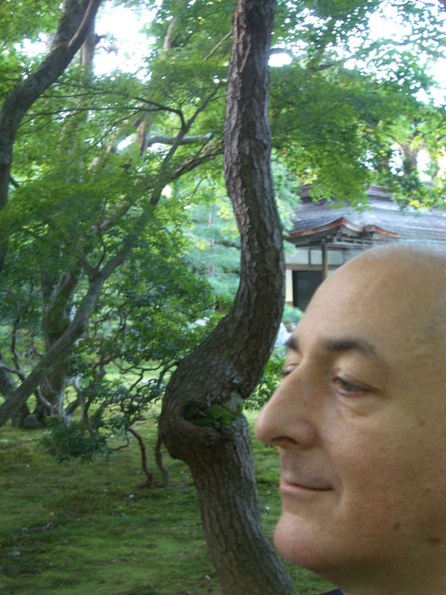 Yes, I know, how can anyone fret about their obituary. Well, some do, I can assure you. The same one's who fret about the, position, of, commas. Meanwhile I managed to capture this picture of myself in my next life. 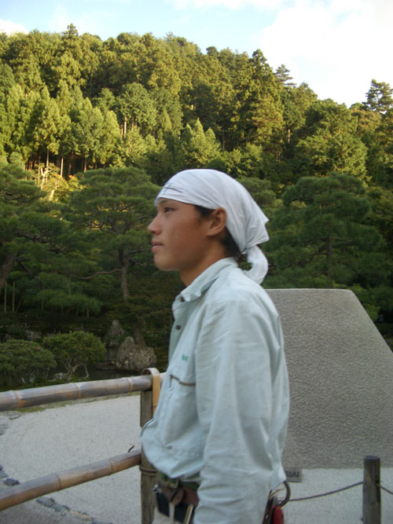 Outside the Ginkaku-ji is the Tetsugaku no Michi, the Path of Philosophy. 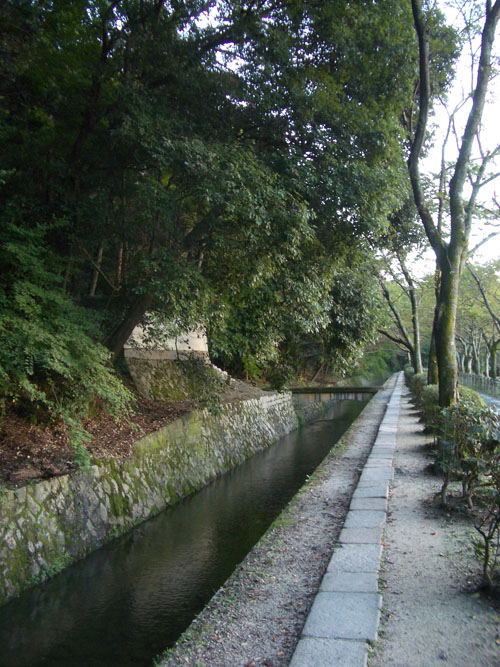 Happy and satisfied we just followed the way until eventually it stopped. The Germans had reappeared, so to avoid their barking we dodged up an alley and found ourselves at another little temple. Just as we arrived a wife was orchestrating her husband into recording the moment. Once they left we merrily did the same. I'm waving my arm because I'm trying to convince João that the camera has taken the photo – "See, the light is flashing." 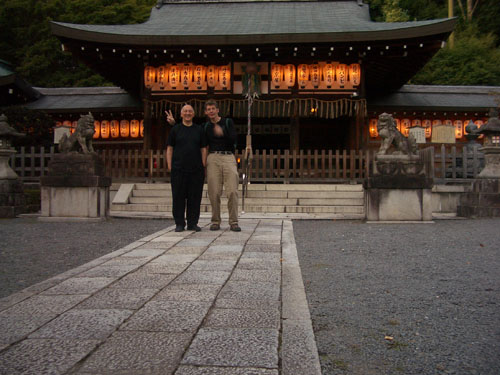 You want a close up? Well ok, if you insist. 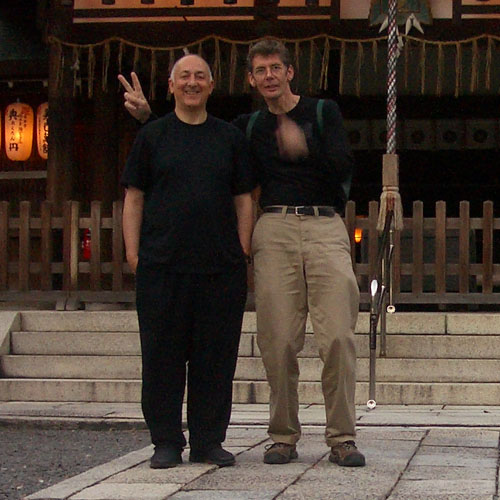 |
|